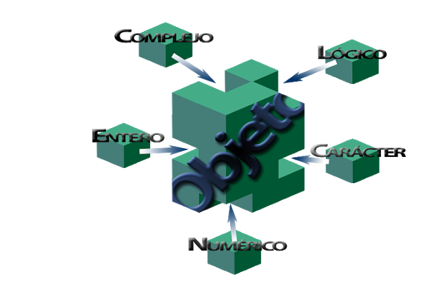

R es un sistema para análisis estadísticos y gráficos que tiene una naturaleza doble de programa y lenguaje de programación y es
considerado un dialecto del lenguaje S y se distribuye gratuitamente bajo los términos de la GNU General Public License. Este lenguaje
se encuentra en varios paradigmas: funcional, vectorial, imperativo, procedural y orientado a objetos. Así mismo, como cualquier otro lenguaje
cuenta con su sintaxis y semántica, siendo las normas básicas las siguientes:
• No se tienen en cuenta los espacios en blanco: podemos o no dejar espacios para que ek cpodigo se pueda ordenar de forma adecuada y entenderse.
• Se distinguen las mayúsculas y miniscúlas para viarables en el código: podemos crear diferentes variables con nombres iguales pero alternando mayúscuas y minúsculas.
• Se pueden incluir comentarios: como vimos anteriormente los comentarios se utilizan para añadir información en el código.
• No es necesario terminar cada sentencia con el carácter de punto y coma ";": en la mayoría de lenguajes de programación, es obligatorio terminar cada sentencia con este carácter. En en cambio R podemos o no terminar de esta forma.
• Lenguaje orientado a objetos: todo en R son objetos, las variables, datos, funciones y resultados, que se generan en R son objetos estos se modifican o manipulan con operadores o funciones (que a su vez son objetos).
• No se tienen en cuenta los espacios en blanco: podemos o no dejar espacios para que ek cpodigo se pueda ordenar de forma adecuada y entenderse.
• Se distinguen las mayúsculas y miniscúlas para viarables en el código: podemos crear diferentes variables con nombres iguales pero alternando mayúscuas y minúsculas.
• Se pueden incluir comentarios: como vimos anteriormente los comentarios se utilizan para añadir información en el código.
• No es necesario terminar cada sentencia con el carácter de punto y coma ";": en la mayoría de lenguajes de programación, es obligatorio terminar cada sentencia con este carácter. En en cambio R podemos o no terminar de esta forma.
• Lenguaje orientado a objetos: todo en R son objetos, las variables, datos, funciones y resultados, que se generan en R son objetos estos se modifican o manipulan con operadores o funciones (que a su vez son objetos).

